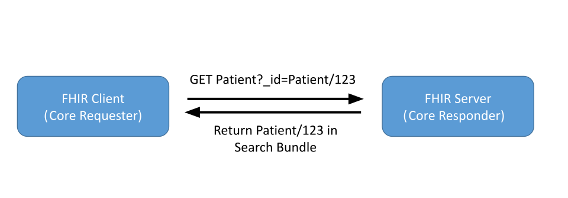

Publication Build: This will be filled in by the publication tooling
| Official URL: http://iehr.ai/fhir/ie/core/ImplementationGuide/iehr.fhir.ie.core | Version: 1.0.0-ballot | |||
| IG Standards status: Trial-use | Maturity Level: 3 | Computable Name: IECore | ||
| Other Identifiers: OID:1.3.6.1.4.1.54392.5.2690 | ||||
Copyright/Legal: iEHR.ai, all rights reserved Creative Commons License |
||||
Where possible, new and updated pre-publishing content is highlighted with green text and background- This highlighting will be removed prior to publication.
Key updates and detailed changes between this and prior versions are available on the IE Core Change Log page.
The IE Core Implementation Guide is certified by GPIT - the certification authority established by The Irish College of General Practitioners (ICGP), the Health Service Executive (HSE), and the Department of Health. The iEHR FHIR IE Core profiles were developed through extensive consultation with the GPIT group. The GPIT certification process provided the guidelines for the implementation and reflects all GPIT requirements. It has successfully passed Phase One of the certification, which focuses strictly on data and framework requirements and compliance.
The IE Core Implementation Guide, based on FHIR Version R4, defines the minimum constraints on FHIR resources to create the IE Core Profiles. It identifies necessary elements, extensions, vocabularies, and value sets, and details their usage. It also documents the minimum FHIR RESTful interactions required for each IE Core Profile to access patient data. Establishing this "floor" of standards promotes interoperability and adoption through common implementation, allowing for further standards development for specific use cases. There are two ways to implement IE Core:
For a detailed description of these different usages of IE Core, see the Conformance Requirements page.
We welcome all Comments, cooperation and collegiate actions to support this aim.
The following actors are part of the IE Core IG:
A IE Core Requester is an application that initiates a data access request to retrieve patient data. The IE Core Requestor is the client in a client-server interaction. The terms "IE Core Requestor" and "Client" are used interchangeably throughout this guide and are not meant to limit this actor to only patient and provider apps. For example, payers and other users can use the same technology. These terms are a short-hand notation for "user application".
A IE Core Responder is a system that responds to the data access request providing patient data. The IE Core responder is the server in a client-server interaction. The terms "IE Core Responder", "Server", and "EHR" are used interchangeably throughout this guide and are not meant to limit this actor to electronic health record systems. For example, HIEs, care coordination platforms, population health systems, etc., can use the same technology. These terms are a short-hand notation for "interoperable healthcare platform".
Below is the list of IE Core Profiles. Each profile identifies which core elements, extensions, vocabularies, and ValueSets SHALL be present in the resource when using this profile. Together, they promote interoperability and adoption through common implementation and provide the floor for standards development for specific use cases. See the IECDI page, for a mapping to the iEHR IE Core Data for Interoperability (IECDI).
A simple narrative summary gives each profile's requirements and guidance. A formal hierarchical table presents a logical view of the content in both a differential and snapshot view, and provides references to appropriate terminologies and examples.
For systems that support the IE Core Profile content structure and the RESTful interactions defined for a resource, the requirements are formally defined in the IE Core CapabilityStatements. In addition, each profile page has a Quick Start Section that documents the required FHIR RESTful search and read operations. These sections demonstrate how to access a patient's clinical and administrative data:

See the FHIR specification for details on FHIR RESTful Search API and the SMART App Launch for how an application gets access to a patient record.
HL7® is a registered trademark of Health Level Seven (HL7), Inc., the non-profit standards developing organization that is accredited by the American National Standards Institute (ANSI).
FHIR®© is a registered trademark of HL7.
SNOMED® is a registered trademark of the International Health Terminology Standards Development Organisation.
LOINC® is a registered trademark of Regenstrief Institute, Inc.